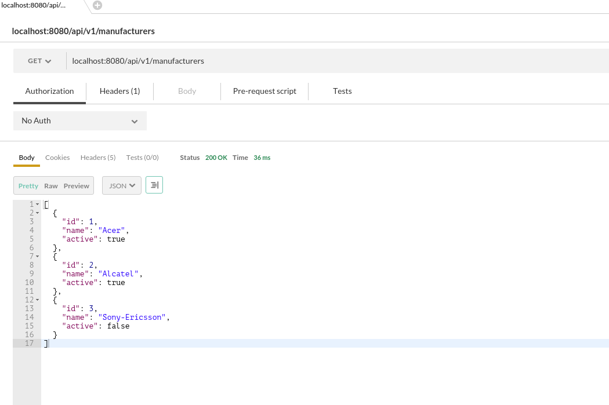
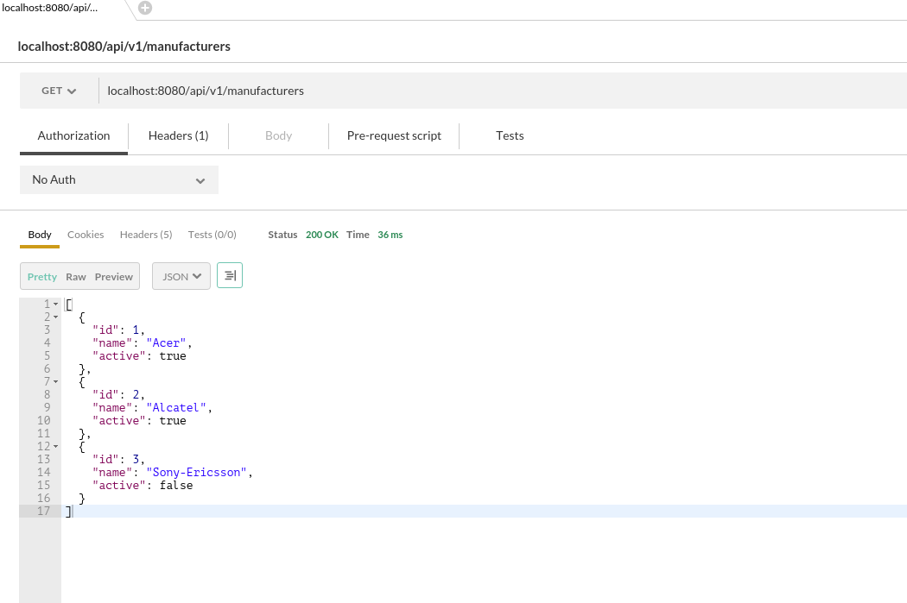

and each of the exposed endpoint is available, showing data that were stored in DB.
and each of the exposed endpoint is available, showing data that were stored in DB.


Jersey 2.x and SpringCloud doesn't get along so I have to make my fingers dirty ...
In the last couple of months I was evaluating/exploring micro-services. Preparing for one of the
conferences I've decided to make a demo application. While micro-services were not main theme for
conference presentation, I wanted to try to deal with micro-service architecture-based application.
Idea that cross my mind was to investigate and try couple of Spring Cloud components.
Main parts of final application were:
High Level Architecture (HLA) diagram is about to present: two well designed and minimalistic web services, one that can represent Catalog (Manufacturer and PhoneModel) and the other that will deal with Inventory (how many stock items of one phone model shop has at it's disposal). Besides that, these two simple micro-services should become part of one bigger system/application, therefore I wanted to play a bit with other key aspects of micro-services architecture like: service-discovery, API gateway, etc. Due to that fact, I've started to look into Spring Cloud components like: Eureka (service-discovery), Zuul (API Gateway), ...
Spring Cloud Eureka Server (service discovery)
Investigation about Eureka was pretty straight forward.
Good starting point is folowing URL:
http://projects.spring.io/spring-cloud/docs/1.0.3/spring-cloud.html#spring-cloud-eureka-server
For this simple application, Eureka Server will be run in "Standalone Mode". Configuration in this case is very simple, there is no need to configure peers.
server:
port: 8761
eureka:
instance:
hostname: localhost
client:
register-with-eureka: false
fetch-registry: false
service-url:
defaultZone: http://${eureka.instance.hostname}:${server.port}/eureka/
The Eureka Server is:
I've prepared SpringBoot application based on Eureka Server.
Project is on Github, on the following URL:
https://github.com/staleks/eureka-server
Basic info, how to build and start application, you can find in README.md of that project.
Spring Boot and Jersey
Now it was the time to start building basic, already mentioned, services like Catalog service and
Inventory service.
So let's start with Catalog Service. Again this will be SpringBoot based application based on REST service.
Catalog will be dealing with two basic entities like: Manufacturer and Phone (phone-model).
Spring-Web and Spring-MVC have nice features providing support for controller/endpoints,
using Jackson data-bind, Java objects can be transformed to JSON objects very easily, I've decided to
try reference REST implementation, Jersey.
Ingredients for REST micro-service are:
I've prepared SpringBoot application, REST micro-service based on Jersey 2.x.
Started using http://start.spring.io.
Picked basic few stuff like: DevTools, Jersey, JPA, etc. The project can also be found on Github:
https://github.com/staleks/spring-boot-jersey2
Basic info, how to build and start application, you can find in README.md of that project.
Application works fine, data is populated in H2 In-Memory data base
and each of the exposed endpoint is available, showing data that were stored in DB.

During integration Spring Boot and Jersey, I was facing some minor issues. Nothing much
and I would say that this is normal when you are facing something new.
Following Spring Cloud documentation, adding Eureka-Client seams on the first hand
nothing much.
Documentation here is very simple,
http://projects.spring.io/spring-cloud/spring-cloud.html#_service_discovery_eureka_clients
Things to be done:
I've applied changes to existing application, you can find them in special branch of already
mentioned project:
Github URL: https://github.com/staleks/spring-boot-jersey2
Changes are applied to branch: develop-eureka. You can see them if you checkout that branch.
$ git clone https://github.com/staleks/spring-boot-jersey2.git
$ git checkout develop-eureka
First signs of trouble in heaven.
While this was very simple on the paper, problems starts to emerge.
First I've started Eureka-Server standalone application. As specified it will bind to port 8761, and start
listening for any micro-service that will notify it about self. While you are still in develop-eureka
branch, you can follow same procedure as described for starting spring-boot-jersey2 demo application
(Gradle build, start it from /build/libs directory).
Category micro-service will start itself, and apply to Eureka-Server as demo-jersey2
(see an image below). Application can be seen in Application section
Name of micro-service is determined in micro-service itself, in bootstrap.yml file that is located on a classpath.
While everything seams that works, on first hand, if you now try with postman all endpoints that were
active and available as in previous version, you will see first signs of trouble.

java.lang.NoSuchMethodError: javax.ws.rs.core.Application.getProperties()Ljava/util/Map;
at org.glassfish.jersey.server.ApplicationHandler.(ApplicationHandler.java:331) ~[jersey-server-2.22.1.jar:na]
at org.glassfish.jersey.servlet.WebComponent.(WebComponent.java:390) ~[jersey-container-servlet-core-2.22.1.jar:na]
at org.glassfish.jersey.servlet.ServletContainer.init(ServletContainer.java:172) ~[jersey-container-servlet-core-2.22.1.jar:na]
at org.glassfish.jersey.servlet.ServletContainer.init(ServletContainer.java:364) ~[jersey-container-servlet-core-2.22.1.jar:na]
at javax.servlet.GenericServlet.init(GenericServlet.java:158) ~[tomcat-embed-core-8.0.30.jar:8.0.30]
at org.apache.catalina.core.StandardWrapper.initServlet(StandardWrapper.java:1231) ~[tomcat-embed-core-8.0.30.jar:8.0.30]
at org.apache.catalina.core.StandardWrapper.allocate(StandardWrapper.java:837) ~[tomcat-embed-core-8.0.30.jar:8.0.30]
at org.apache.catalina.core.StandardWrapperValve.invoke(StandardWrapperValve.java:135) ~[tomcat-embed-core-8.0.30.jar:8.0.30]
at org.apache.catalina.core.StandardContextValve.invoke(StandardContextValve.java:106) [tomcat-embed-core-8.0.30.jar:8.0.30]
at org.apache.catalina.authenticator.AuthenticatorBase.invoke(AuthenticatorBase.java:502) [tomcat-embed-core-8.0.30.jar:8.0.30]
at org.apache.catalina.core.StandardHostValve.invoke(StandardHostValve.java:141) [tomcat-embed-core-8.0.30.jar:8.0.30]
at org.apache.catalina.valves.ErrorReportValve.invoke(ErrorReportValve.java:79) [tomcat-embed-core-8.0.30.jar:8.0.30]
at org.apache.catalina.core.StandardEngineValve.invoke(StandardEngineValve.java:88) [tomcat-embed-core-8.0.30.jar:8.0.30]
at org.apache.catalina.connector.CoyoteAdapter.service(CoyoteAdapter.java:521) [tomcat-embed-core-8.0.30.jar:8.0.30]
at org.apache.coyote.http11.AbstractHttp11Processor.process(AbstractHttp11Processor.java:1096) [tomcat-embed-core-8.0.30.jar:8.0.30]
at org.apache.coyote.AbstractProtocol$AbstractConnectionHandler.process(AbstractProtocol.java:674) [tomcat-embed-core-8.0.30.jar:8.0.30]
at org.apache.tomcat.util.net.NioEndpoint$SocketProcessor.doRun(NioEndpoint.java:1500) [tomcat-embed-core-8.0.30.jar:8.0.30]
at org.apache.tomcat.util.net.NioEndpoint$SocketProcessor.run(NioEndpoint.java:1456) [tomcat-embed-core-8.0.30.jar:8.0.30]
at java.util.concurrent.ThreadPoolExecutor.runWorker(ThreadPoolExecutor.java:1142) [na:1.8.0_65]
at java.util.concurrent.ThreadPoolExecutor$Worker.run(ThreadPoolExecutor.java:617) [na:1.8.0_65]
at org.apache.tomcat.util.threads.TaskThread$WrappingRunnable.run(TaskThread.java:61) [tomcat-embed-core-8.0.30.jar:8.0.30]
at java.lang.Thread.run(Thread.java:745) [na:1.8.0_65]
Usually this kind of Exception comes from fact that there is some mixture of classes on a classpath.
And if you look closely of dependencies for this project, you will find pretty obvious thing.
There are jersey-1.x JAR's, coming as dependencies of eureka-client applied on project. And
of course there are jersey-2.x JAR's coming as dependencies of spring-boot-starter-jersey.
This problem is not something that I discovered. It is known to the community and well documented in
following URL:
https://github.com/Netflix/eureka/issues/600
How I solve it?
As I see it, I had two options: either I am going to use new eureka client that is based on
Jersey 2.x or I downgrade Jersey 2.x -> Jersey 1.x in my project.
After I've read couple or resources, and found out that Spring Cloud project will wait for
Netflix to release Eureka client support for Jersey 2.x, I've decided to go with option where
I will downgrade Jersey to 1.x.
Eventually, this means:
I've started new project, you can find it on Github, on following URL:
https://github.com/staleks/spring-boot-jersey1
You will notice that this is almost same project as it was demo-jersey2.
Example has to prove that it can "talk" to Eureka-Server and to use Spring Framework as glue code.
How to start the application, you can find it in README.md.
After a while, (e.g. 30s heart-beat), you can see that demo-jersey1 is in application list. (see the image below).
Then again let's go to /h2-console and make sure that data provided by liquibase is there in H2 In-Memory DB.
(already seen in previous demo-jersey2 application, just repeat steps).
Now let's examine endpoints, that are exposed in this application:


Let me just to remind you that this is not only solution, it is just one of the solutions.
But it is working which is success by itself.
Still I need to well document it.
... to be continued ...